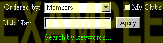
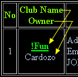

You will find the list of Cybertown Clubs by selecting Clubs from the Jump Gate on the right side of the browser or through its directory listing.
How to Join a Club:
First you'll want to browse what clubs are currently available for you
to join. You can check out what's available by using this filter:

Ordered by: Allows you to sort the clubs alphabetically by: Club
Name or Keyword (as listed by the club leader); and numerically
by Club Creation Date and Number of Members. Choose one
and then click the Apply button.
Club Name: You can type in the full club name or just the first
few letters and then click the Apply button.
Checking the My Clubs box will apply these filters to show only
the clubs that you have joined.
Selecting Search by
keywords... will take you to this filter:
You can browse by one or two keywords from the predefined list on the
pull down menus plus you can type in a keyword that is not on the predefined
list. If you decide to search using two or more keywords then all the
keywords you define will be used to filter through the clubs. Hit the
Apply button.
If the search engine doesn't find all your keywords listed for any one club then your search has failed and you should try again.
Are you still with me? Now let's say you've done your search and discovered a totally rad club or two that you'd like to join.

Click the underlined Club Name and
you'll go to a page with more information about the club. Find and click
the
button at the bottom of the page.
If you're in 2D mode you'll jump to the Club's 2D chat window. If you're
in 3D mode you'll be transported to a 3D clubhouse.
You can find out more about the Club via the buttons you'll find below the Cybertown Control Panel on the right. If you decide later that this isn't the Club for you then you can always
Have fun and join as many Clubs as you can handle.
How to Visit a Club:
You can visit any club that you are a member of. If you're like many people, you've probably joined a club or two (or 3 or 4 or 5) and have forgotten their names already. Don't worry...Cybertown will help you keep track of the clubs you have joined and you can generate that list at anytime. You can also visit a Club that you are not a member of just by clicking on the Info link in the Club Directory.
- At Ordered by: choose Club Name from the pull down menu
- Check the My Clubs box
- Hit the Apply button
This will generate a list with all the clubs you are a member of including any clubs you have created.
- Click the name of the club you want to visit and you'll jump to the Club's 2D chat page.
- To enter the 3D clubhouse click the 3D world button.

To keep up with any club events, remember to check their Inbox,
Messages and Calendar when you're in the clubhouse.
How to Start a Club:
First: You must have 500 experience points to open a club.
Let's say that you checked out the current club list and nobody is doing what you want to do. So you thought about it and decided you've got the time and you're going to take the big leap and become the leader of a club. Hey, that is really cool! Cybertown loves people like you! Follow these steps and you'll be a club leader in a few moments.
You will find the list of Cybertown Clubs by selecting Clubs from the Jump Gate on the right side of the browser or through its directory listing.
Look for and click the button.
You'll get a form that asks you for:
|
Click the Create button and your club will be added to the list of current clubs.
After your club has been added to the list, you may want to edit your information or upload a club image. You can do that by first choosing Club Name in the Ordered by drop down menu and checking the My Clubs box before hitting the Apply button. You'll generate a list with all the clubs you are a member of including your personal club. Choose the name of your club from the list and you'll go to the 2D front page. Scroll to the buttons below the Cybertown Map and you'll find the Update button. Click that button and you'll get a form which gives you information on uploading a club image and editing any information on the club.
Good Luck!
Related Subjects: Use Message Boards | Chatting in Cybertown